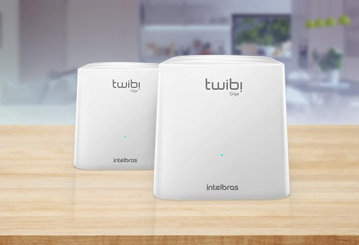

O sistema Wi-Fi Mesh, diferente da rede Wi-Fi comum, a rede Mesh se comunica por módulos que distribuem o sinal Wi-Fi de forma igual por toda a casa. Operando em dual band o sistema escolhe automaticamente sempre a melhor frequência para a sua internet ter mais velocidade e menos interferência. Este modelo em específico possui 2 portas Gigabit, ideais para planos de internet com velocidade superior a 100 Mbps
